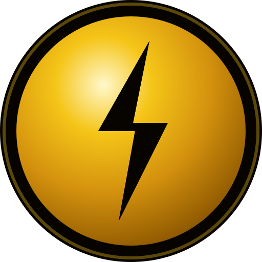

733 million people have no electricity. Billions have no clean water. Millions of children study in schools with no power. $WATT Protocol permanently reserves 5% of all tokens — 50 million $WATT — to change this. On-chain. Transparent. Forever.
Every major clean energy initiative in history has been designed to benefit corporations, governments, and wealthy nations first. The communities with the greatest need — in rural Africa, South Asia, and Latin America — receive the least.
$WATT flips this entirely. Our Community Impact Fund ensures that the most underserved communities on Earth are not just beneficiaries of the clean energy transition — they are participants in it, earning $WATT tokens and gaining economic agency for the first time.
This isn't charity. It's a structural reallocation of value — encoded permanently into our smart contracts, governed by our community, and recorded immutably on the blockchain.
It directly aligns with five United Nations Sustainable Development Goals — making $WATT fundable by the World Bank, African Development Bank, USAID, EU Horizon, and dozens of other global grant programs.

These allocations are not promises — they are code. Smart contracts govern every disbursement. The community votes on every grant. Every transaction is public on the blockchain. No government, no board, no executive can redirect this fund for any other purpose.
Whether you're generating clean energy, representing a community in need, or a grant body looking for transparent impact — $WATT was built for you.